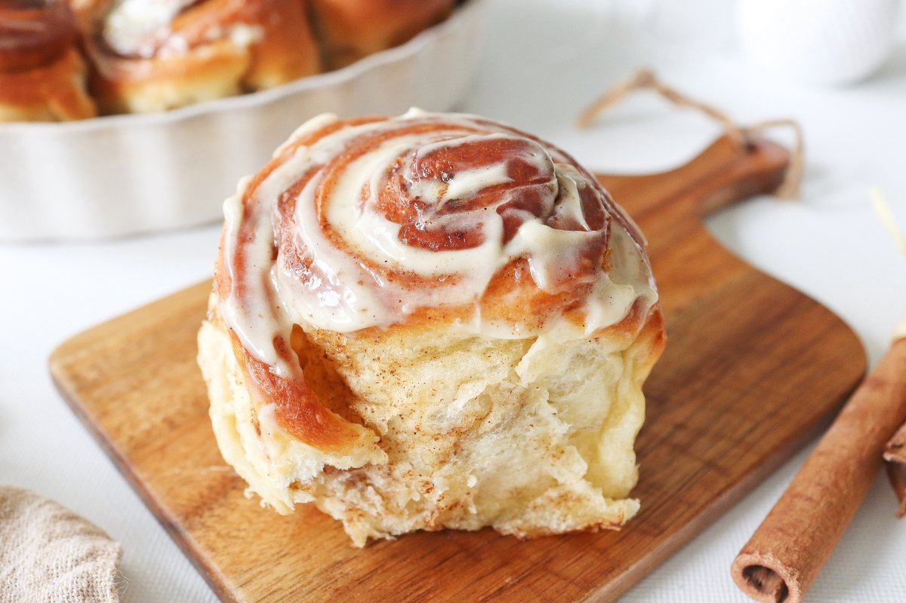

Cinnamon Rolls

Description
Cinnamon rolls, reminiscent of the iconic Cinnabon style, are a delectable treat that marries the warmth of cinnamon with the sweetness of icing. Soft, pillowy dough rolled up with a generous sprinkle of cinnamon sugar, baked to golden perfection, and topped with a luscious cream cheese frosting—these rolls are the epitome of indulgence. Whether enjoyed for breakfast, brunch, or as a delightful dessert, each bite is a blissful experience that brings comfort and joy. This recipe captures the essence of classic cinnamon rolls, ensuring every swirl is a moment of pure delight.
Ingredients
- For the Dough:
- 1 cup warm milk (about 110°F)
- 2 1/4 teaspoons active dry yeast (1 packet)
- 1/2 cup granulated sugar
- 1/3 cup unsalted butter, melted
- 2 large eggs, room temperature
- 1 teaspoon salt
- 4 1/2 cups all-purpose flour
- For the Filling:
- 1/2 cup unsalted butter, softened
- 1 cup brown sugar, packed
- 3 tablespoons ground cinnamon
- For the Cream Cheese Frosting:
- 1/4 cup unsalted butter, softened
- 4 ounces cream cheese, softened
- 1 1/2 cups powdered sugar
- 1/2 teaspoon vanilla extract
- 1/8 teaspoon salt
Steps
- Activate the Yeast: In a small bowl, combine warm milk and yeast. Let it sit for about 5-10 minutes until the mixture is foamy.
- Prepare the Dough: In a large mixing bowl or the bowl of a stand mixer fitted with a dough hook, combine the activated yeast mixture, sugar, melted butter, eggs, and salt. Gradually add flour, mixing until a soft dough forms.
- Knead the Dough: Turn the dough out onto a lightly floured surface and knead for about 5-7 minutes until it becomes smooth and elastic. Alternatively, knead the dough in the stand mixer for the same duration.
- Rise the Dough: Place the dough in a greased bowl, cover it with a clean kitchen towel or plastic wrap, and let it rise in a warm, draft-free place for about 1-2 hours or until it doubles in size.
- Prepare the Filling: In a small bowl, mix together softened butter, brown sugar, and ground cinnamon until well combined.
- Roll out the Dough: Once the dough has risen, punch it down and roll it out on a floured surface into a large rectangle, about 16x20 inches in size.
- Spread the Filling: Spread the prepared cinnamon filling evenly over the rolled-out dough, leaving a small border around the edges.
- Roll the Dough: Starting from the long edge, tightly roll the dough into a log. Pinch the seam to seal.
- Cut into Rolls: Using a sharp knife or a piece of dental floss, cut the dough log into 12 equal-sized rolls.
- Arrange in a Pan: Place the rolls in a greased 9x13 inch baking dish, leaving a little space between each roll for expansion.
- Rise Again: Cover the rolls with a clean kitchen towel or plastic wrap and let them rise in a warm place for another 30-45 minutes, or until they double in size.
- Bake: Preheat the oven to 350°F (175°C). Once the rolls have risen, bake them in the preheated oven for 20-25 minutes or until they are golden brown and cooked through.
- Make the Frosting: While the rolls are baking, prepare the cream cheese frosting. In a mixing bowl, beat together softened butter, cream cheese, powdered sugar, vanilla extract, and salt until smooth and creamy.
- Ice the Rolls: Once the rolls are done baking, remove them from the oven and let them cool for a few minutes. Spread the cream cheese frosting generously over the warm rolls.
- Serve: Serve the cinnamon rolls warm and gooey, savoring each delightful bite of cinnamon-spiced sweetness. Enjoy these irresistible treats with a cup of coffee or a tall glass of cold milk for the ultimate indulgence!